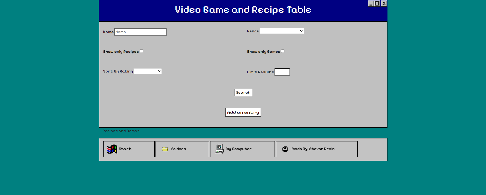
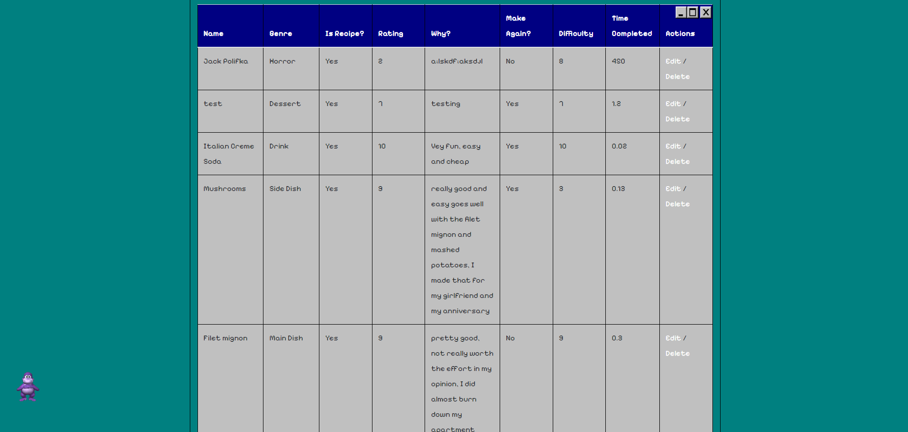
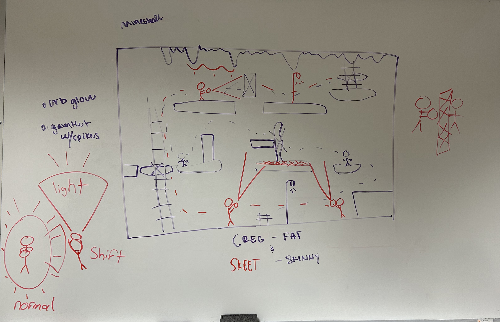
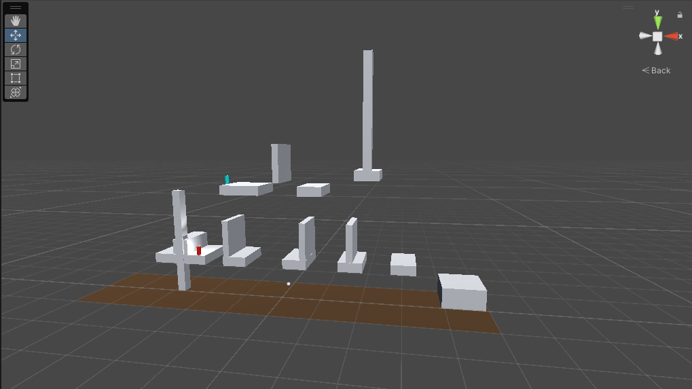
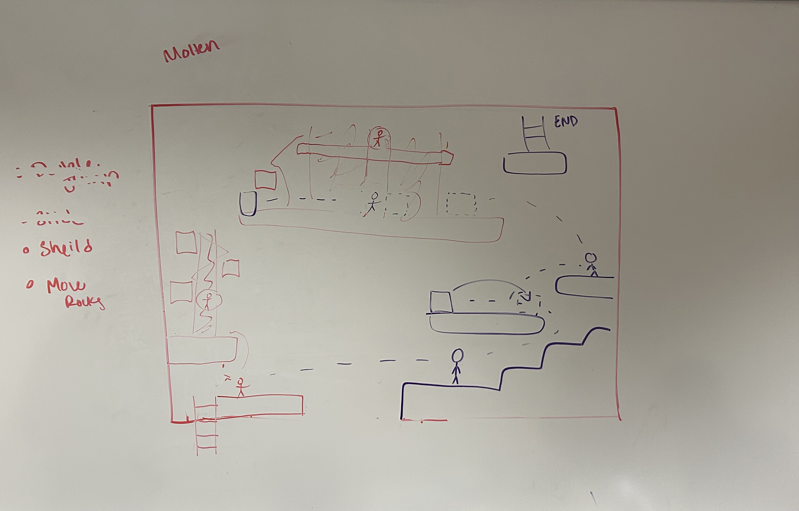
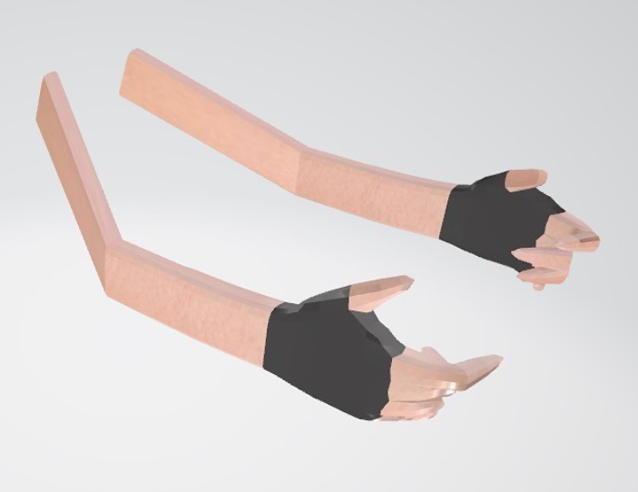
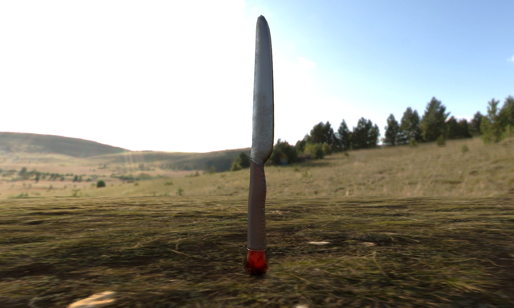

Steven Drain's Portfolio

Hello I am Steven Drain, I am a third year Games, Interactive Media and Mobile (GIMM) student at Boise State University. I am from Eagle Idaho who wants to explore jobs in both programming games and 3D modeling. I learned how to program in middle school with HTML, CSS, and JavaScript, I learned Unity 3D and C# in Junior Year of High School creating a 3D shooter game which skyrocketed my interest in the games industry. I joined GIMM and continued my education in programming, graphic design, 3D modeling, and Game Design. I have learned how to use Photoshop, Premire, Blender, Unity, Visual Studio Code, and Github. I hope to continue to design games and make expereinces that inspired me to make unique expereinces. I am currently looking for internships and jobs in the games industry and am excited to see where my career takes me. Below are a few examples of my work. Make sure to click on the images to expand for a better view, I hope you enjoy!
HTML Portfolio Artifacts
Bowling Data Website


This project was created for my web design class. It displays data from a bowling group that my friends and I started. We collected around 90 data points across 15 columns. The technologies I used include HTML, JavaScript, CSS, and D3.js. I utilized D3.js to create the graphs depicted in the first image, and JavaScript in conjunction with Bootstrap to construct the table. The server was built using Express. This class provided me with the opportunity to learn and apply all of these languages, culminating in this project. I am particularly proud of this work because it allowed me to engage deeply with a project that genuinely interested me. I was able to work with data that my friends and I had collected over a year. if you want to see the code for this project you can visit this link Mobile Data Website
Recipie and Video Game Filter Table Website
 This project was created for my web design class. It displays data that anyone can add to a fliter table, using JavaScript, HTML, SQL, and More. The website has a total of 4 pages, the index page, the add page, the edit page, and delete page, thet all work together in order to edit the main table on the main page. this table has over 500 lines of data that can be filtered by the user by Name, Genre, if it the data is a recipe or a video game, the rating and the ammount of results shown. I am proud of this project because it was the first time I worked with SQL and made something of this scale, this project took a lot of time and relearning in order to make this project work. I am particularly proud of the CSS work and the JavaScript, as I had to make systems I've never worked with before and made a CSS file that I am extremely happy with I love the retro feel of windows 95 and used it heavily as inspiration. This project was a culmination of all the skills I learned in the class and countless of hours of work that I am proud of. if you want to see the code for this project you can visit this link Mobile Data Website
Unity Portfolio Artifacts
Project Olympus

This was the first Game I ever made in High School, it helped me learn what I wanted to do in life, it taught me basics in Programming (C#), 3D modeling, Graphic Design, and Game Design, while I don't have my code with me anymore you can still download my project from the Project Olympus Itch.io Page. I worked with another student on this game and we took around two years to make this game. I'm proud of what we have made even if it is pretty lackluster. I had the most fun and am the most proud of the 3d models I made which you can see a bit more in this Instagram page
Gym-sperience
This project was the first VR Game I worked on, this was a group project that I collaborated with four other people on. This project was to teach someone how to use gym equipment and help the user get acclimated in the gym space. We initially did not want to do a gym equipment tutorial, but a campus tour where the user would be able to click on the buildings on our campus and would be able to see important locations and information about the buildings. We had to pivot pretty deep into our idea phase, due to many different problems We worked on the idea for a semester and got used to using the equipment: Unity for VR, Occulus Quest 2 and 3, and 360 cameras. I worked mostly on the script for the videos we took, scheduling times for filming, coming up with the initial idea, filming the 360 videos, 360 Video editing in Premire Pro, and minor Unity programming. I learned a lot about video editing and the complexities of working with a team on a project.
Saddle Bums Last Stand

This was the first Game Jam I ever participated in and won, I did everything myself, the modeling, the scripting, and game design, This is an endless shooter that is set in a western enviroment, the object of the game is to shoot as many enemies as possible before they touch you. I had 10 days to make this game and I am proud of what I made, while the idea is really simple and there are a lot of bugs that make it tough to play for a long time and very basic and rudementary ways to do the power-up which I have now learned much easier and simpler ways of making. if you want to check it out the link to download is here: Saddle Bums Last Stand Itch.io Page
Interactive Comic

This was one of the first collabroative game projects I worked on in GIMM, I worked with four others in creating this interactive comic, we were given the topic, Consiousness, death, and the implications of quantum mechanics , I worked specifically on the scripting, Interactiveness, and a 3D model for a minigame. The Interactive comic follows a class learning about the death of their class hampster, while the class asks the teacher very difficult questions about death and consiousness. We also added a perspective element, where if you hover over each character it changes all the character's sprites in order to show how each student sees the world differently.
Level Design Artifacts
While I enjoy programming and 3D modeling, I also enjoy level design the most out of everything. I have worked on a few games and understanding how to design interesting and unique levels that keep the player engaged is something I am extremely interested in. Below are a few sketches of levels I have created on my own or with a group in order to optimize the experience and introduce new mechanics to the player. I will go more in depth on each of these levels and what I learned from them below.
Mineshaft Multiplayer Level
 This is a game I worked on with three other students in my game design class. We worked on laying this level out for almost an hour making minor tweaks and changes. The game is a couch co-op 3D platformer where two players work together in order to escape from the center of the earth. The mineshaft level shown is really dark and hard to see the obstacles. Each level the players get a new power and in this one the players have a flashlight type power (player 1) and rock break gauntlets (player 2). Each player's movement options are also slightly different: one player moves slower and doesn't jump as high (player 1), while the other player moves faster and jumps higher (player 2). The players have to split up in order to get through the level. First, player 2 has to jump to an area only they can get to in order to do some platforming and let player 1 access the next floor. Player 1 has to shine its light up in order to light the environment for player 2 to see and break the obstacles in this dark level. Once they both are on the same level, player 1 has to stay close to player 2 in order to light the way to the exit. This level was a lot of fun to make and I learned a lot about how to make a level, and how to split up characters naturally to make them have to interact in new ways.
Molten Multiplayer Level
This is the Molten level for the same couch co-op game for the mineshaft. We worked on a few different levels, and in this level, the players have a lava sheild and a push rock ability in order to help eachother complete the level. the player with the lava sheild can cross the lava and protect the other player while they push rocks. The player with the push rock ability can push rocks in order to make platforms for the players to jump on. Like the level above it was a lot of fun brainstorming ideas to make this level interesting.
More levels to come soon
Graphic Design / 3D Modeling Portfolio Artifacts
These are some 3D models that I made using Blender and Maya , I made these to promote my game Project Olympus and improve in those softwares, I learned How to use Blender in High School and have worked with it ever since. I have since worked on a few other projects. I am proficient in Blender and can make and import 3D models into Unity. I am very proud of these models and they all display something I have learned in Blender. One shows off lighting, another low poly water, an office environment with multiple models in a scene, and lastly a hand 3D model that we used for our game.
Project Olympus


Hand Model
Knife Model
This is a knife model I worked on in my animation and 3D modeling class. In order to make this, I had to learn Maya, RoadKill, and Substance Painter 3D. I really enjoyed making this model and painting it in Substance Painter. I feel like it worked out really well in the end, although I would like to make the knife blade sharper than it is in the future and work on the stitching for the handle.